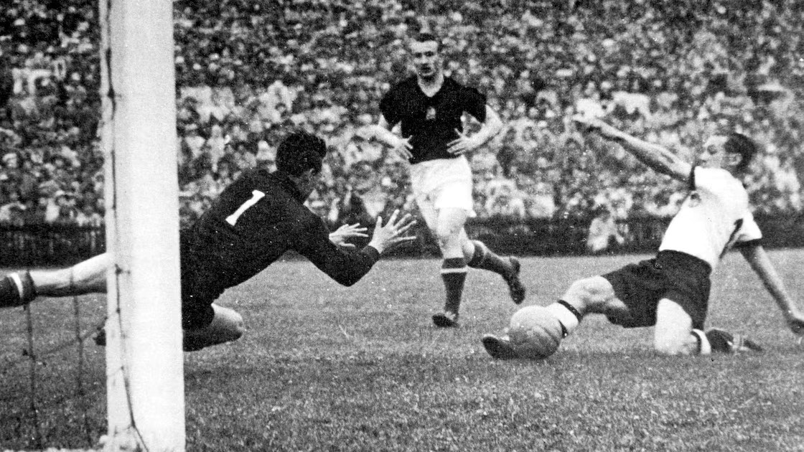
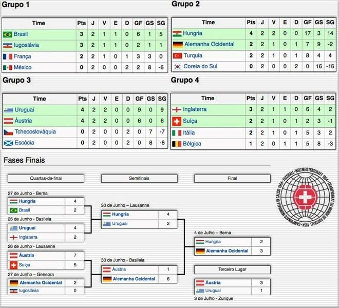

Origem da Copa do Mundo
Campeão Histórico
A Alemanha Ocidental conquistou seu primeiro título mundial na Copa de 1954 em uma final histórica contra a Hungria. Mesmo começando perdendo por 2 a 0, os alemães conseguiram virar a partida para 3 a 2. O resultado ficou conhecido como “Milagre de Berna”, já que a Hungria era considerada praticamente imbatível. Além do impacto esportivo, a vitória ajudou a aumentar a autoestima do povo alemão no pós-guerra e marcou o início da tradição vencedora da Alemanha no futebol.

Países Participantes
A Copa de 1954 contou com 16 seleções: Brasil, Uruguai, México, Alemanha Ocidental, Áustria, Bélgica, Escócia, França, Hungria, Inglaterra, Itália, Iugoslávia, Suíça, Tchecoslováquia, Coreia do Sul e Turquia.
Caminho da Copa
Fase de Grupos: A Copa de 1954 teve um formato diferente, com apenas duas partidas por equipe na fase de grupos. Brasil e Iugoslávia avançaram no Grupo 1, enquanto a Hungria dominou o Grupo 2. Uruguai e Áustria também se destacaram com campanhas ofensivas e sem sofrer gols. O Grupo 4 foi o mais equilibrado, com Inglaterra e Suíça garantindo vaga após jogos muito disputados.
Quartas de Final: As quartas ficaram marcadas por muitos gols e partidas históricas. A Hungria venceu o Brasil por 4 a 2 na chamada “Batalha de Berna”, jogo conhecido pelas faltas e expulsões. A Áustria derrotou a Suíça por 7 a 5, partida que até hoje é a que teve mais gols em Copas do Mundo. O Uruguai eliminou a Inglaterra e a Alemanha Ocidental venceu a Iugoslávia.
Semifinal: A Hungria derrotou o Uruguai por 4 a 2 na prorrogação, enquanto a Alemanha Ocidental goleou a Áustria por 6 a 1, garantindo vaga na final.
Final: A final aconteceu em Berna, na Suíça, entre Alemanha Ocidental e Hungria. Mesmo sendo considerada favorita, a Hungria perdeu por 3 a 2 após uma virada alemã. O jogo entrou para a história como o “Milagre de Berna”.

Curiosidades da Copa de 1954
A Copa de 1954 teve uma das maiores médias de gols da história dos Mundiais. O jogo entre Áustria e Suíça terminou em 7 a 5, recorde de gols em uma única partida de Copa. Essa também foi uma das primeiras Copas transmitidas pela televisão em vários países da Europa.